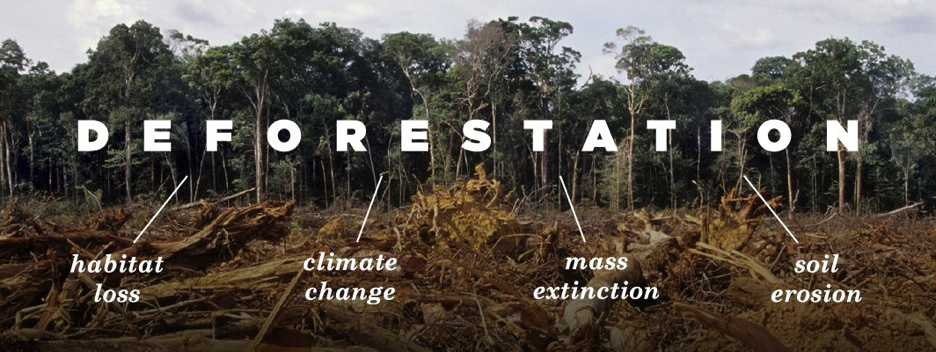
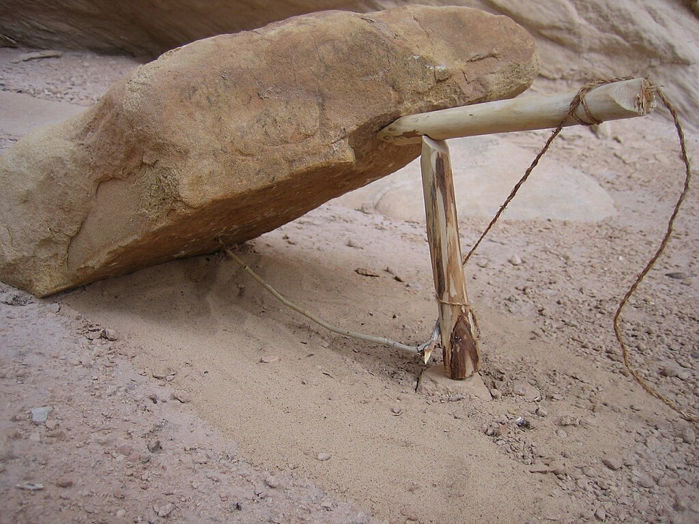

Sri Lankan Leopard
Locations where Sri Lankan Leopards are found in Sri Lanka:
- Yala National Park
- Wilpattu National Park
- Bundala National Park
- horton plains
Threats to Sri Lankan Leopards:
Threat 1: Habitat Loss
Habitat loss is one of the biggest threats to Sri Lankan Leopards. As human populations grow and expand into natural areas, the leopards' habitat is destroyed or fragmented. This can lead to a loss of prey, as well as increased conflict between humans and leopards. The consequences of habitat loss can be devastating for the leopard population, as it can lead to a decline in numbers and genetic diversity.
Several mechanisms are being taken to reduce the threat of habitat loss. One such mechanism is the creation of protected areas, such as national parks and wildlife reserves. These areas are designed to preserve the natural habitat of the leopard and other wildlife. Additionally, conservation organizations are working to educate local communities about the importance of preserving natural habitats and reducing human-wildlife conflict.
For more information on habitat loss and its impact on Sri Lankan Leopards, please visit the Department of Wildlife Conservation.
Threat 2: Poaching
Poaching is another major threat to Sri Lankan Leopards. Leopards are hunted for their fur, which is used in traditional medicine and clothing. Additionally, leopards are sometimes killed by farmers who view them as a threat to their livestock. The consequences of poaching can be devastating for the leopard population, as it can lead to a decline in numbers and genetic diversity.
Several mechanisms are being taken to reduce the threat of poaching. One such mechanism is the creation of protected areas, such as national parks and wildlife reserves. These areas are designed to preserve the natural habitat of the leopard and other wildlife. Additionally, conservation organizations are working to educate local communities about the importance of preserving natural habitats and reducing human-wildlife conflict.
For more information on poaching and its impact on Sri Lankan Leopards, please visit the Department of Wildlife Conservation.
Measures taken to reduce poaching and habitat loss
- There are several mechanisms that have been implemented to reduce habitat loss and poaching related to Sri Lankan leopards. The long-term conservation of the leopard involves protection, education, conflict mitigation, responsible custodianship, and coexistence1. Here are some of the mechanisms that have been implemented:
- LEOPOCON is a non-profit organization that aims to conserve the Sri Lankan Leopard and secure its future in the country’s various landscapes. They utilize human resources and methods for awareness-raising, education, and research to safeguard the country’s apex predator. They act as a bridge between responsible people in society and necessary authorities to pass on valuable information and throughout the last year, many successful raids conducted by the authorities, creating a barricade between dealers and racketeers while protecting leopards through acts of law. They have also carried out local researches regarding leopards in Sri Lanka. Apart from that, they have been playing a major role in raising awareness in society about the conservation of both leopards and the environment as a whole. They have used digital and printed media, community awareness sessions, and public lectures for this. They have also reached out to many partner organizations and helped them by providing necessary information as well2.
- The Wilderness & Wildlife Conservation Trust aims to conserve the Sri Lankan leopard in its natural habitat and by doing so, influence larger biodiversity and landscape conservation on this island. They conduct long-term research of the leopard and understand its land-use to achieve their goal1.
- Camera traps have been installed in various locations throughout the country to monitor the leopard population and to identify individual leopards. This has helped to estimate the population size and to identify areas where leopards are most active3.
- Awareness-raising campaigns have been conducted to educate the public about the importance of conserving the Sri Lankan leopard and its habitat. These campaigns have been conducted through digital and printed media, community awareness sessions, and public lectures2.
- Law enforcement has been strengthened to prevent poaching and illegal trade of Sri Lankan leopards. Many successful raids have been conducted by the authorities, creating a barricade between dealers and racketeers while protecting leopards through acts of law